Texto 07 - Classificação do relevo e morfologia do litoral brasileiro
Conteúdo: Classificação geomorfológica; geomorfoclimática; morfoestrutural. Aspectos do
relevo litorâneo brasileiro.
Objetivo: Identificar as classificações do relevo e a morfologia do litoral brasileiro.
Digite seu nome
Introdução
Na última aula vimos a relação entre a estrutura geológica e as formas do
relevo, quer dizer, o relacionamento entre os tipos de rochas e as feições da superfície no Brasil.
Nesta aula, vamos ver como a classificação do relevo mudou ao longo do tempo devido aos novos avanços
científicos na área da geomorfologia.
Vamos conhecer a diversidade de paisagens existentes no território brasileiro, seus recortes e variações
topográficas.
Questões a serem respondidas no caderno sobre o tema da aula de hoje:
1. Como o Brasil era conhecido em termos de relevo até a década de 1940?
2. Quais são as altitudes mais elevadas do Brasil e em que regiões elas ocorrem?
3. Quais foram os critérios utilizados por Aroldo de Azevedo para classificar o relevo brasileiro?
4. Quantas unidades geomorfológicas foram identificadas por Aroldo de Azevedo?
5. Quem propôs uma nova classificação do relevo brasileiro nos anos 1960 e 1970?
6. Quais foram os critérios considerados por Aziz Ab’Saber em sua nova classificação do relevo?
7. Quais as principais formas do litoral brasileiro mencionadas no texto?
8. O que são enseadas e onde são encontradas?
9. O que são tômbolos e em que praias brasileiras são encontrados?
10. Como o litoral brasileiro é afetado pelas correntes marítimas e quais são as principais correntes
mencionadas no texto?
As características do relevo no Brasil
O Brasil era conhecido como um país de planaltos e planícies, pelo menos até a década de 1940. Embora o país
tenha altitudes modestas, que variam em média, entre 200 m a 800 m, com apenas 7,3% do território com
altitudes superiores a esse número.
As altitudes mais elevadas ocorrem no geral na região Sudeste e Picos entre a Amazônia e a fronteira com a
Guiana e Venezuela, como o Pico da Neblina (2.993,7 m) e o Pico 31 de Março (2.972,6 m) na Serra do Imeri,
ambos situados ao norte do Estado do Amazonas.
E foi a altitude o primeiro critério utilizado para classificar o relevo brasileiro. Seguido do critério
geomorfoclimático, com a dinâmica da erosão e sedimentação e, o mais recente, baseado na estrutura geológica
ou morfoestrutural. Vamos ver cada um deles.
As classificações do relevo brasileiro
Classificação geomorfológica
A extensão territorial do Brasil levou diversos cientistas a adotarem distintas classificações para a grande
variedade geológica e de paisagens existentes no Brasil.
Dentre os precursores geógrafos e geomorfólogos, destaca-se o professor Aroldo de Azevedo, na década de 1940.
O professor Aroldo de Azevedo privilegiou uma abordagem geomorfológica e, por isso, adotou o critério de
altitudes para lidar com o relevo brasileiro. Ele identificou oito unidades geomorfológicas, conforme o mapa
abaixo:
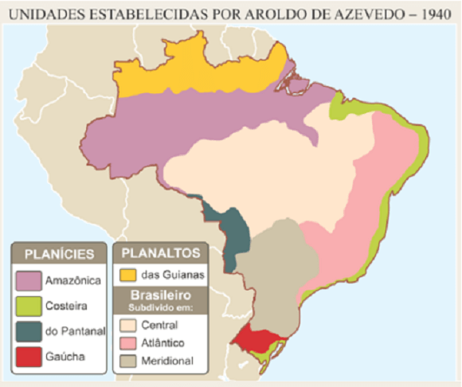
Essa classificação adotou um caráter mais abrangente à época, mais generalizado. Dividiu o país em oito
grandes unidades: quatro planaltos (das Guianas, Central, Atlântico e Meridional) e três planícies
(Amazônica, Costeira e do Pantanal).
Esse modelo de representação do relevo brasileiro foi muito utilizado na maioria dos livros didáticos até a
década de 1950.
O relevo e a dinâmica geomorfoclimática
Nos anos de 1960 e 1970, o geógrafo Aziz Ab’Saber propôs uma nova classificação do relevo brasileiro. Ele
aperfeiçoou o modelo anterior. Ele contou com ajuda da aerofotogrametria uma nova proposta do relevo brasileiro a partir da erosão e
sedimentação.
×
O levantamento aerofotogramétrico é um dos métodos utilizados para o mapeamento da
superfície terrestre. O voo fotogramétrico é realizado por uma aeronave, na qual é acoplada
uma câmera fotogramétrica que cobre toda a área a ser mapeada.
Ab’Saber percebeu que, além da altitude, era importante avaliar os processos geomorfológicos ligados à
dinâmica climática. Essa abordagem considerava se o relevo sofria processos de erosão (desgaste) ou de
sedimentação (acúmulo de sedimentos), ou seja, se determinada área perdia ou recebia sedimentos.
Nessa reformulação, os planaltos foram considerados como áreas desgastadas pela ação da erosão, enquanto que
as planícies eram áreas que recebiam esses detritos em permanente processo de construção.
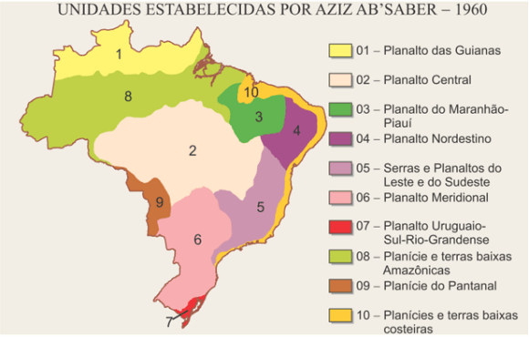
O autor manteve o planalto das Guianas, mas o subdividiu o planalto Brasileiro nas seguintes unidades, são
elas: Planalto das Guianas; Central, Meridional, Serras e Planaltos do Leste e Sudeste, Maranhão-Piauí,
Nordestino e Uruguaio-Sul-Rio-Grandense. As planícies estão relacionadas à: planície Costeira, Amazônica, do
Pantanal e do Pampa.
Esses estudos buscavam provar que a Amazônia não era uma planície, pelo menos não totalmente, pois essa área
era composta por planícies e terras baixas. Isso quer dizer que o terreno em construção (que recebia
sedimentos) estava apenas localizado nas margens do rio Amazonas, enquanto que o restante era constituído
por terrenos bastante desgastados.
Para o autor, 75% das terras brasileiras eram de planaltos; as planícies comporiam 25% restantes. Mesmo com
observações feitas em viagens por terra e por aviões, o maior avanço viria com a incorporação dos radares no
detalhamento do relevo.
Classificação morfoestrutural
Publicado em 1989 pelo geógrafo Jurandyr Ross, essa classificação utilizou de fotografias áreas do projeto
RADAM
Brasil. Leva em conta a estrutura geológica na formação do relevo e o fator escultural das formas de relevo.
Além dos planaltos e das planícies, surge as unidades das depressões. São no total, 28 unidades do relevo,
sendo 12 Planaltos, 12 Depressões e 06 planícies. É um mapeamento mais detalhado para nortear o ocupação do
território, a construção de estradas, o planejamento, a ocupação do solo e proteção ambiental.
×
O Projeto RADAM foi realizado pelo governo brasileiro na década de 70 para a pesquisa de
recursos naturais. Na época, o uso do radar representou um avanço tecnológico, pois, sendo um
sensor ativo, a imagem podia ser obtida tanto durante o dia quanto à noite e em condições de
nebulosidade, devido às microondas penetrarem na maioria das nuvens.
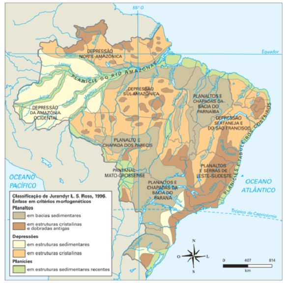
Fonte: Vesentini (2013).
A classificação de Ross considera a influência dos tipos de rocha nas formas do relevo, isto é, a
morfoestrutura. Também considera os climas atuais na modificação do relevo, quer dizer a morfoclimática e os
processos de erosão e sedimentação; além dos climas passados (morfoescultura) e sua influência na
modificação do relevo.
As planícies ficaram mais restritas no litoral e áreas inundáveis como Lagoas dos Patos no Rio Grande do Sul,
planície do rio Araguaia em meio a depressão anteriormente classificada como Planalto Central.
Há, da mesma forma, enormes áreas de depressão, anteriormente denominas como planaltos ou planícies. A
planície do rio Amazonas ficou restrita à área de inundação e agora com uma depressão em sua porção
ocidental e um planalto em seu lado oriental. Se fizéssemos um corte nessa área veríamos o seguinte:
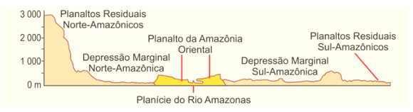
O mesmo poderíamos fazer com o que era classificado como Planalto Atlântico, agora classificado como
Depressão Sertaneja e do São Francisco, onde ocorrem elevações como o Planalto da Borborema e a Chapada do
Araripe.
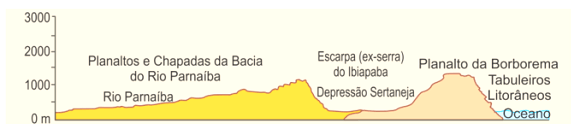
O relevo da América do Sul
Em 2016, o geógrafo Jurandyr Rossa publicou um novo mapa do relevo da América do Sul, muito mais detalhado e
com ajuda de imagens de radar de satélites, Google Earth e Mapas geológicos das empresas públicas do
Ministério de Minas e Energia.
O mapa delimita as unidades dos três blocos fundamentais do continente com base em diferenças geológica,
solos e formas de relevo.
A serra da Mantiqueira integra planaltos bastante erodidos, entremeados por depressões (cor laranja,
2.6-2.9). As bacias sedimentares mais antigas estão em azul (4.1-4.4).
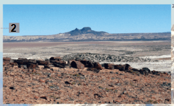
O deserto da Patagônia representa um resquício do Gondwana, com planaltos bastante erodidos com
chapadas e morros de origem vulcânica que se cobrem de gelo no inverno (3.3.2).
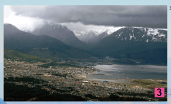
A conformação recortada do extremo sul decorre do deslocamento do continente para Oeste. Ao lado, a
cidade de Ushuaia, no extremo sul da América do Sul (5.1-5.3).
As formas do litoral brasileiro
No Brasil, as áreas de contato entre o continente e o mar revelam uma diversidade de paisagens e feições
geomorfológicas (relevo), com ampla variação topográfica.
O relevo do litoral brasileiro sofre atuação da erosão e da sedimentação proveniente das águas dos rios e
oceânicas que deságuam no litoral.
Dentre inúmeras formas, as principais são a baía. A baía é uma faixa de mar ou de oceano
rodeada de terra que avança para o continente, ela é menor do que o golfo. A entrada da baía é estreita e
alarga-se para o interior. Normalmente são locais de exploração económica, porque nelas as águas ficam mais
calmas, favorecendo por exemplo construção de portos. Veja abaixo:
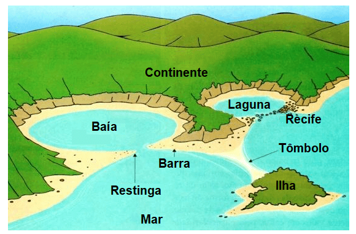
Algumas são importantes áreas de preservação ambiental, como: a baía dos Golfinhos e dos Porcos, em Fernando
de Noronha e a baía de Guanabara no Rio de Janeiro.
Outra importante formação litorânea são as enseadas, que também correspondem a reentrâncias
na costa, só que um pouco mais aberta do que a baía. São encontradas de norte a sul em todos os estados
litorâneos do Brasil.
Nas praias brasileiras é possível, da mesma maneira, vislumbrar também a existência de outras formas
resultantes do acúmulo de sedimentos transportados pelo mar, pelos ventos e pelos rios que deságuam no
litoral. Verifica-se a presença de tômbolos, formações arenosas que ligam uma ilha ao
continente, e também de cabos ou promontórios, porções de terra que se
projetam na direção do mar. Em alguns lugares do país, a formação desse relevo dá nome a municípios, por
exemplo: Cabo de Santo Agostinho, no estado de Pernambuco, Cabo Frio e Arraial do Cabo, no Estado do Rio de
Janeiro.
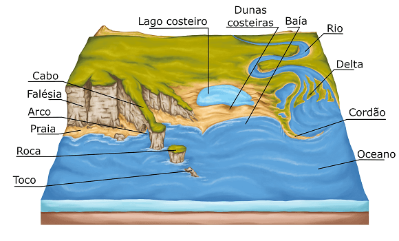
Nas áreas de desembocadura dos rios junto ao mar pode ocorrer acúmulo de sedimentos como areia, cascalho ou
lama. Este material é retirado das margens e das vertentes, sendo levado em suspensão pelas águas dos
rios que o acumulam em bancos, constituindo os depósitos aluvionares. Esse acúmulo forma um relevo chamado
de Barra ou barra de praia. Os exemplos são: Barra da Tijuca no RJ, Garopaba em SC, praia
do Farol da Barra na BA, dentre inúmeros outros.
O acúmulo de sedimentos e a presença de recifes de
coral dá origem a formações de lagunas. Estas são caracterizadas por serem uma porção de água salgada
separada parcialmente separada do mar devido a essas barreiras naturais, havendo, no entanto, aberturas que
permitem a ligação com o mar. Esse tipo de relevo é comum no litoral brasileiro em Alagoas, Rio de Janeiro,
Rio Grande do Sul, etc.
×
Os recifes de coral são formados pelo acúmulo de animais marinhos e de certas algas. Com o
tempo, em condições favoráveis, um recife de coral pode transformar-se numa ilha ou, pelo menos,
em um atol.
O litoral brasileiro é conhecido por possuir costas baixas, isto é, formações com baixa altitude. Entretanto,
há formações com costas altas em vários Estados, formado por paredões escarpados junto ao oceano, são as
chamadas falésias. Podem ser encontrados nos Estados de Alagoas, Bahia, Ceará, Rio Grande
do Norte e Rio Grande do Sul.
Se você não sabia, agora já sabe!
As Falésias de Torres
As falésias do município de Torres localizam-se no litoral norte do Estado do Rio Grande do Sul.
Correspondem a uma importante formação vulcânica resultante dos derrames basálticos da era Mesozoica. O
nome da cidade se deve à presença de três torres formadas por rochas basálticas que compõem as Guaritas
e o Morro do Farol, no perímetro urbano.
Esses morros vêm sendo modificados intensamente desde o início da era Cenozoica. Houve forte atuação de
agentes climáticos, como o vento e a chuva, e também do oceano: nos últimos 230 mil anos a região sofreu
Quatro regressões e transgressões marinhas.
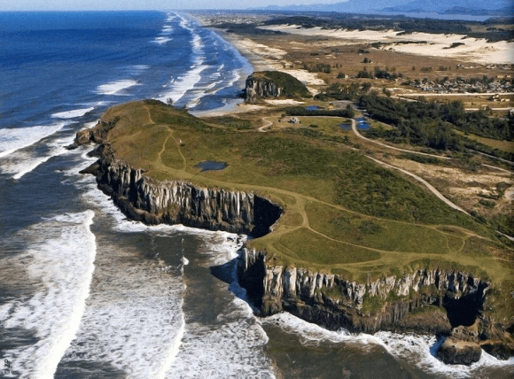
A divisão do litoral brasileiro
O litoral brasileiro é pouco recortado com golfos e penínsulas pouco expressivas. Ele possui incríveis 7.408
km de orla marítima, mas se considerarmos todas suas reentrâncias, seus recortes, esse número vai para cerca
de 9.200 km.
Litoral equatorial amazônico e setentrional do Nordeste
Podemos nos referir ao litoral norte aquele que se estende desde o Cabo Orange, na foz do Rio Oiapoque (AP),
até o Cabo São Roque (RN).
São trechos de costas baixas e de acumulação de sedimentos ligados à planície litorânea da Amazônia e
nordestina. Na parte amazônica, destaca-se o grande volume de água da bacia amazônica, desde os Estados do
Amapá, Pará até o Maranhão com uma vegetação típica de áreas onde se encontram o rio com o mar: os
manguezais. O manguezal é um tipo de solo lodoso com plantas adaptadas a salinidade e com
raízes aéreas, ricas em nutrientes e fundamental para o balanço do ecossistema fluvial e marinho.
No trecho nordestino, a partir do Golfo do Maranhão até o Cabo de São Roque, o relevo é formado por dunas,
com restingas e lagoas costeiras.
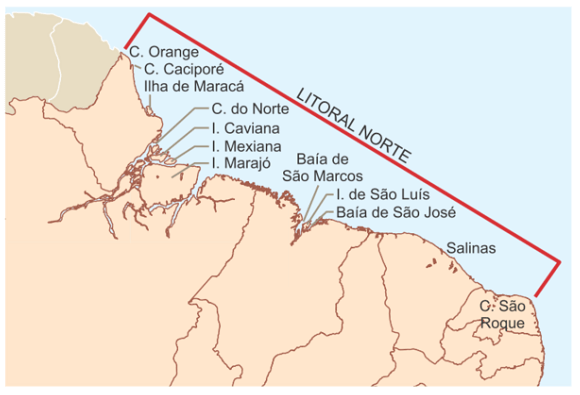
É ai que se localizam as famosas dunas como os lençóis maranhenses. As dunas são formadas pela ação dos ventos
alísios que invadem o continente durante todo o ano.
×
Os ventos alísios são ventos constantes e úmidos que tem ocorrência nas zonas subtropicais em
baixas altitudes. Ele sopra nos trópicos na região do Equador de Leste a Oeste (ao contrário
do sentido da rotação da Terra) e por serem úmidos provocam grande incidência de chuvas.
O litoral nordestino também apresenta costas altas com falésias sedimentares, como em Canoa Quebrada no
Estado do Ceará. Com o clima quente e seco no Rio Grande do Norte, por exemplo, a invasão das marés na costa
baixa proporciona a técnica de represar as águas através de diques e com isso pode ser formadas salinas.
O litoral tropical ou oriental
Esse trecho do litoral já é marcado por ser quente e úmido com falésias e praias mais estreitas. Vai desde o
Cabo de São Roque (RN) até o Cabo de São Tomé (RJ).
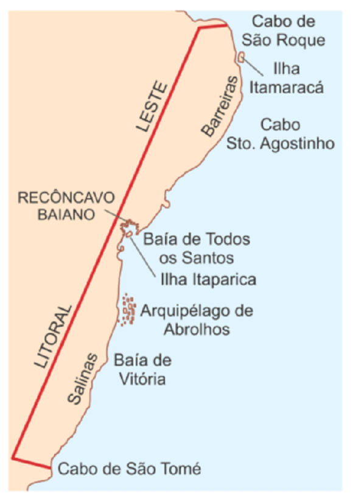
Destaca-se a presença de recifes de arenito e coral. Os recifes de arenito são formados por antigas praias
que se solidificaram e transformaram-se em arenito. São geralmente estreitos e não passa de 100 m de
largura. O recife cujo nome da capital de Pernambuco possui pouco mais de 5 km de extensão.
Já os recifes de corais ocorrem da acumulação de restos calcários, seja na forma de franjas perpendiculares à
costa ou como barreiras paralelas.
É nesse trecho que se encontra a Costa do Descobrimento – o trecho litorâneo atingido pelas caravelas de
Cabral e onde teve início à colonização portuguesa. Estão localizados a Baía de Todos os Santos (BA), Porto
Seguro (BA), Cabo Branco, ilha de Itamaracá, dentre outros.
O litoral meridional ou subtropical
O litoral neste trecho que cobre as regiões Sudeste e Sul é o mais acidentado e diversificado de todo o país.
Abrange desde a fronteira do Espírito Santo com o Rio de Janeiro até o Arroio Chuí no Rio Grande do Sul.
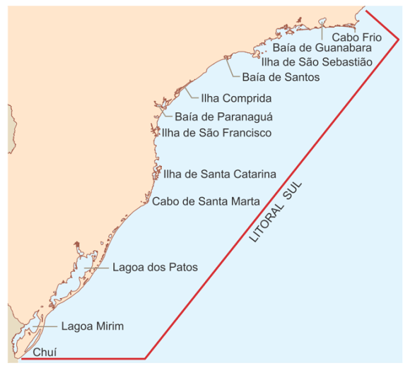
Caracteriza-se por falésias cristalinas devido à proximidade com a Serra do Mar com o oceano Atlântico. A
planície costeira não é contínua e, em algumas partes surgem as baixadas, como a Santista, Fluminense,
Iguape, dentre outras.
Na divisão com Paraná e Santa Catarina há um predomínio de ilhas devido ao afloramento da crista externa da
Serra do Mar. De Laguna (SC) até o Arroio Chuí (RS) o litoral torna-se mais arenoso com formação de lagoas
costeiras como a dos Patos, Mirim e Mangueira. Além de conviver com paisagens de blocos falhados escarpados.
Os principais acidentes geográficos são: Cabo Frio (RJ), ilhas de Paquetá, Governador, Cobras RJ); Ilhas de
São Sebastião (SP), São Vicente (SP); Baía de Paranaguá (PR); Ilhas de São Francisco e Santa Catarina (SC),
dentre outros.
O movimento das águas oceânicas no litoral brasileiro
Devemos mencionar os movimentos das águas que repercutem no litoral brasileiro como aquele realizado pelas
correntes marítimas. No caso do Brasil, o litoral sofre influência de três correntes: a das Malvinas ou
Falklands, com águas frias, na região Sul do país; a do Brasil, de águas quentes, que banha a costa Sudeste
e Nordeste; e a das Guinas, também de águas quentes, que passa pelo litoral da região Norte. A dinâmica das
correntes marítimas ocorre devido ao vento e as diferenças de densidade da água. Os ventos movimentos
enormes massas de água, enquanto as alterações de temperatura e salinidade modificam a densidade da água
fazendo-a subir ou baixar ao fundo do oceânico, criando assim correntes circulatórias.
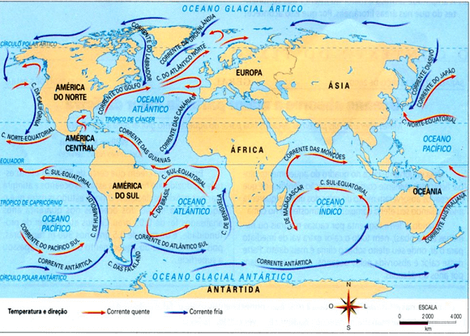
Teste seu conhecimento
Leia o texto abaixo:
Cerca de 36% do território brasileiro é constituído por rochas desse tipo, sendo 32% arqueo-proterozoicas e
4% vulcânicas basálticas, mesozoicas.
O texto refere-se à:
Teste seu conhecimento
Descubra sobre o termo descrito no trecho abaixo:
Sua superfície é pouco acidentada e normalmente em nível altimétrico não é elevado. Nessa área os processos
de sedimentação sobrepõem-se aos de erosão.
Depreende-se que o texto aborda o(a):
Teste seu conhecimento
Leia o trecho abaixo:
O Litoral do Brasil: Da ação de solapamento realizada pelas ondas do mar na costa brasileira resulta uma
forma de relevo escarpado, que se apresenta, geralmente, mais vertical nas formações sedimentares que nas
cristalinas. São:
Não existe pergunta boba! A Ciência é feita de perguntas!
P:
Quais os tipos de planaltos existentes?
R: Embora os planaltos sejam relevos em processo erosivo, neles podem ser
observadas diferentes formas, porque as rochas que os constituem são diferentes. As formações planálticas
mais comuns no Brasil são as escarpas de planalto, as chapadas e as cuestas.
- As escarpas de planalto são mais íngremes porque são formadas por rochas cristalinas, mantendo
altitudes mais elevadas.
- As chapadas são planaltos com topos achatados, aplainados. Essa forma se deve à presença de rochas
sedimentares sobrepostas a uma base de rochas cristalinas. Portanto, o topo sofre uma erosão mais rápida
porque as rochas sedimentares desgastam-se facilmente.
- As cuestas, chamadas também de planaltos arenito-basálticos, aparecem na bacia do Paraná e
apresentam rochas magmáticas dispostas ao lado de rochas sedimentares. Por isso, uma parte do planalto
fica mais íngreme, porque sofre uma erosão mais lenta, sendo chamada de front ou frente da cuesta. Seu
reverso desgasta-se mais rapidamente, por ser constituído por rochas sedimentares, mais frágeis. Algumas
vezes, todo o reverso desaparece, formando os chamados "morros testemunhos”. A cuesta de Botucatu no
Estado de São Paulo é um exemplo dessa formação.
P:Por que as dunas se movem?
R: As dunas se formam devido à interação do trabalho de acúmulo de
sedimentos feito pelo vento e pelo mar. Os sedimentos são arenosos e vem sendo transportados há cerca de 5
mil anos. As correntes marítimas carregam grande quantidade de areia, depositando-as nas praias. Quando
esses sedimentos secam, tem início o trabalho de transporte pelo vento, que os acumula nas partes mais altas
da praia.
A seguir, ocorre um processo natural de sucessão ecológica que faz surgir a vegetação que recobre as dunas.
Por meio de seu complexo sistema de raízes, a vegetação contém o deslocamento desses montes de areia. O
problema é que as dunas são o ecossistema costeiro que mais sofre pressão da ocupação humana, e a retirada
de sua vegetação tem gerado consequências desastrosas.
O desmatamento da vegetação que recobre as dunas para dar lugar a loteamentos de veraneio, trilha para a
passagem de veículos e até mesmo queimadas expõe a areia, favorecendo seu deslocamento. Há áreas bastante
ameaçadas pelo avanço das dunas, como Cabo Frio, no Rio de Janeiro: Itaúnas, no Espírito Santo; e Mangue
Seco, na divisa dos estados da Bahia e de Sergipe.
P:
Poderia explicar melhor a existência das Depressões?
R:
As depressões apresentam superfícies levemente inclinadas, altitudes modestas situadas entre 100 e 500 m e
são bastante aplainadas. As depressões são circundadas, geralmente, por planaltos elevados. No Brasil, 11
unidades dessa forma de relevo são áreas mais baixas que o relevo em que se localizam e são classificadas
em:
Depressões periféricas: áreas rebaixadas no contato entre terrenos sedimentares e cristalinos, como na
borda leste da bacia do Paraná e da depressão periférica Central ou Sul-rio-grandense.
Depressões marginais: margeiam as bordas de terrenos sedimentares como nas depressões amazônicas.
Depressões interplanálticas: áreas mais baixas do que os planaltos que as circundam. O exemplo é o da
depressão Sertaneja e do São Francisco.
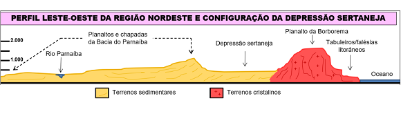
Desafio - Jornada do herói: O Encontro com o Mentor
Na aula passada, vimos que as formas de relevo pode ser um excelente aliado na ambientação da história
do nosso jogo sobre o Brasil.
O herói recusa o chamado para a aventura, mas as vezes não é má ideia, até que se tenha tempo para
sentir-se preparado para tomar o rumo da “região desconhecida” que está à espera.
Nesta aula, vamos conhecer o Encontro com o Mentor, que será à ajuda necessária que o herói precisará
para atingir seus objetivos.
Como sempre, formem seus grupos e use a criatividade para lidar com esse desafio.
Instruções
Forme um grupo com 5-6 estudantes;
Leia o texto abaixo e discuta com seu grupo o conteúdo das questões;
Faça anotações em seu caderno;
Seja criativo, use os conhecimentos que você já possui sobre o Desafio.
Tempo da atividade: 25 minutos.
O Encontro com o Mentor (4)
Leia a passagem abaixo:
“Vocês, Buscadores, temerosos no início da aventura, consultem-se com os anciãos de Nossa Tribo.
Procurem aqueles que já partiram antes. Aprendam as histórias secretas das fontes de água, das
trilhas de caça, das moitas de frutas e saibam onde ficam as terras más, as areias movediças, os
monstros a evitar. Alguém muito velho, fraco demais para ir conosco desenha para nós um mapa na
poeira do chão. O xama da tribo, em seguida, nos entrega alguma coisa, um presente mágico, um
talismã poderoso que vai nos proteger e guiar durante a busca. Agora podemos partir com o coração
mais leve e confiante porque levamos conosco a sabedoria acumulada de Nossa Tribo”.
O trecho destaca aquilo que existe em praticamente todas as histórias em todas as civilizações, seja na
mitologia, folclore ou mesmo na vida cotidiana: a figura sábia e protetora do Mentor.
O Mentor é aquele que ajuda, orienta, treina ou fornece dons ou presentes mágicos para o herói cumprir
sua jornada.
Aloy, em no jogo Horizon Zero Dawn, segue seu caminho ao lado de seu tutor Rost e aprende a
sobreviver no mundo pós-apocalíptico onde máquinas hostis dominam a natureza mil anos no futuro.
Nos quadrinhos, o professor Charles Xavier é o mentor e fundador dos X-Men, cujo sonho é a convivência
pacífica entre humanos e mutantes.
Já Luke Skywalker possui alguns mentores na sua jornada em Star Wars, como Obi-Wan Kenobi e o
mestre Jedi Yoda, os quais procuram ensinar a Luke como descobrir e lidar com a Força.
O Encontro com o Mentor é o estágio da Jornada do Herói em que este recebe provisões, o conhecimento e a
confiança necessários para superar o medo e começar sua aventura.
Fontes de sabedoria
Mesmo se não houver um personagem concreto a desempenhar as muitas funções do arquétipo do Mentor, os heróis sempre entram em contato com alguma fonte de
sabedoria antes de se lançarem numa aventura.
×
Arquétipo é um conceito da psicologia utilizado para representar padrões de comportamento
associados a um personagem ou papel social. A mãe, o sábio e o herói são exemplos de
arquétipos. Esses “personagens” têm características percebidas de maneira semelhante por
todos os seres humanos. Esse conceito foi desenvolvido por Carl G. Jung, psiquiatra suíço e
fundador da psicologia analítica. Para Jung, esses comportamentos estão no inconsciente
coletivo e, por isso, são percebidos de maneira similar por todos. Jung dizia que os
arquétipos são uma herança psicológica, ou seja, resultam das experiências de milhares de
gerações de seres humanos no enfrentamento das situações cotidianas. A partir do conceito de
Jung, desenvolveu-se uma classificação com 12 arquétipos que simbolizam algumas motivações
básicas dos seres humanos: Sábio, Mago, Explorador, Criador, Herói, Rebelde, Amante, Tolo,
Cuidador, Homem comum, Inocente e Governante.
Pode ser a experiência do que já partiram numa busca antes deles, ou pode ser que olhem para dentro de
si mesmos, em busca da sabedoria pela qual já pagaram caro, em aventuras anteriores. O Encontro com o
Mentor é um momento rico na história e para desenvolver o conflito. Todo mundo já teve uma experiência
com um Mentor ou um modelo, a fim de desempenhar determinado papel.
Mentores no folclore e no mito
Desde a proteção mágica ou quando elfos ajudam os animais, contos de fadas, proteção dos deuses e deusas
são todas projeções do arquétipo de Mentor ajudando o herói.
Na mitologia os heróis procuram o conselho de bruxas, magos, feiticeiros, espíritos e deuses de seus
mundos. Na mitologia grega é famosa a figura do centauro Quíron, metade homem e metade cavalo. Quíron
guiou Hércules no seu aprendizado e faz a ponta entre o humano e os poderes superiores da natureza.
Mentor em pessoa
O termo Mentor vem de uma personagem em Odisseia de Homero. Era o amigo leal de Ulisses ou Odisseu, a
quem este confiou a responsabilidade de educar seu filho Telêmaco, enquanto Odisseu fazia sua longa
viagem de volta da Guerra de Troia. Mentor deu seu nome a todos os guias e preceptores, mas na verdade é
Atena, a deusa da sabedoria, quem age para trazer à história a energia do arquétipo de Mentor.
Evitando os clichês de Mentor
É muito fácil cair nos estereótipos e clichês dos comportamentos dos velhos sábios que já são conhecidas
através de milhares de histórias. Para evitar isso, desafie os arquétipos do homem de barba branca ou
fadas-madrinhas.
Engano
A vida pode ser marcada pela instabilidade e nem sempre o mentor pode ser o “bonzinho” da história. Ele
pode enganar o herói ou para aliciá-lo para uma vida de crimes.
Conflitos entre Mentor e Herói
A relação entre herói e mentor pode assumir contornos trágicos desde a existência de um mentor corrupto
como de um herói violento e sem escrúpulos. Dependendo da história, ela pode girar em torno do mentor. O
mentor pode ser uma evolução do herói, pois sobreviveu a diversas experiências na jornada do herói.
Enfim, com o mentor presente ou esporadicamente participante da história, sua presença pode ajudar o
herói a vencer o medo e o levar ao limite da aventura, ao estágio seguinte da Jornada do Herói, a
Travessia do Primeiro Limiar.
Questões para discutir:
Pense em alguns jogos, eles possuem mentores?
Quais funções de Mentor podem ser encontradas e desenvolvidas em sua história? Seu herói precisa de um
mentor?
Seu herói tem algum código íntimo de ética, ou modelo de comportamento? Seu herói tem consciência das
situações? Como ela se manifesta?
Qual a atitude do herói em relação à energia do Mentor?
FLORENZANO, Teresa Gallotti. Geomorfologia: conceitos e tecnologias atuais. São Paulo:
Oficina de Textos, 2008.
ROSS, Jurandyr. L. S. Compartimentação do relevo da América do Sul. Revista Brasileira de
Geografia
1, p.21-58, 2016.
SANTOS, Patrícia Cardoso dos (et al.). Enciclopédia do Estudante: geografia do Brasil:
aspectos físicos, econômicos e sociais. São Paulo: Moderna, 2008.
VESENTINI, José William. Geografia: o mundo em transição. Ensino médio. 2. ed. – São
Paulo: Ática, 2013.
VOGLER, Christopher. A jornada do escritor: estruturas míticas para escritores. Tradução de
Ana Maria Machado. -
2.ed. Rio de Janeiro: Nova Fronteira, 2006.
SKOLNICK, Evan. Video game storytelling: what every developer needs to know about narrative
techniques.